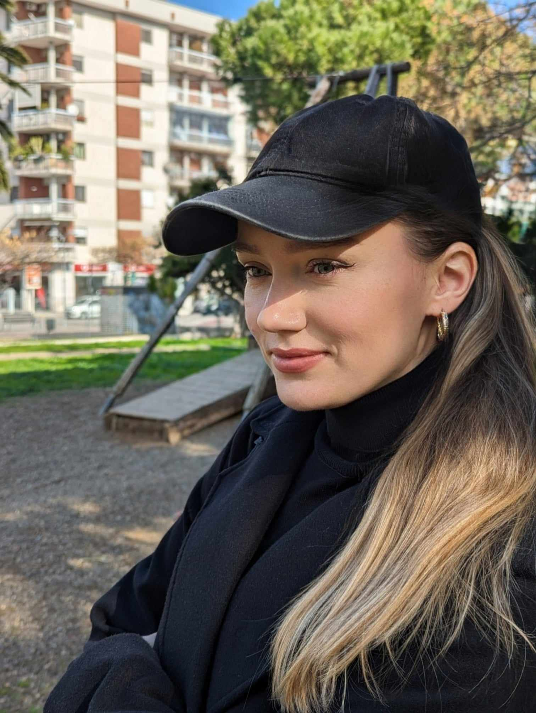

Васькова Марина Аркадіївна
Домашнє завдання до уроку №2
Особисті дані
- Мені 35 р.
- Народилася у м. Чернігові.
- Проживаю в Італії, м. Барі.
Трохи про мене
- Я мама і дружина.
- Донці Елізабет 3 роки.
- Мультинаціональна сім'я:
- чоловік мексиканець
- батько італієць
- На початку війни виїхали до Італії,
на цей час перебувала у декретній відпустці,
коли остання закінчилася -
втратила роботу в Україні. - Раніше працювала менеджером по роботі з телеканалами.
Хоббі
Хоббі це важко назвати, але це те, що мені подобається:
- Подорожі
- Готувати смачненьке
- Велопрогулянки
Є ще багато чого, але чоловік лежить із температурою 38, дитина скаче мені по голові, а встигнути зробити дз до наступного уроку дуже хочеться, тому зупинюся на цьому.
Мрії
Опанувати front-end розробку та не зупинитися на цьому.
Знайти віддалену
роботу, фінансову незалежність та стабільність.
Мрію про закінчення війни та
повернення додому. Україна найкраща!